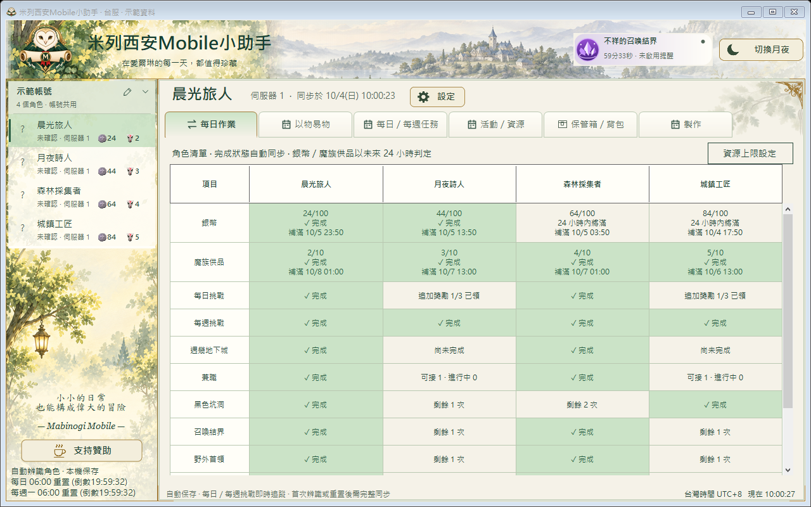

物品整理
搜尋背包與保管箱的已同步物品，用分類篩選縮小範圍。查看紀錄，少一點反覆翻找。
Milletian Mobile Helper / 冒險手札
Windows x64 · 非官方玩家工具米列西安 Mobile 小助手
查看角色背包與倉庫，掌握每日進度，
把反覆翻找的時間，留給愛爾琳的冒險。
MMH v0.10.1 · 已公開發布

資料以最近一次成功同步為準。
01 / 為冒險留一點餘裕
搜尋背包與保管箱的已同步物品，用分類篩選縮小範圍。查看紀錄，少一點反覆翻找。
切換已辨識的角色，查詢角色倉庫與同帳號的公用保管箱；依使用習慣調整角色順位。
將各角色的每日、每週與活動進度並列查看。尚未取得的資料顯示未同步，不當成已完成。
02 / 看看實際操作
03 / 從一份手札開始
保留整個可攜式資料夾。
需要擷取時另行安裝 Npcap。
切換地圖，並開啟遊戲倉庫。
DOWNLOAD / 帶上你的手札
MMH v0.10.1 已發布，下載完整可攜式 ZIP 即可開始使用。
支援目標：Windows 10／11 · x64
已測試：Windows 10 x64
尚待驗證：Windows 11、乾淨電腦
Npcap 需另行安裝 ↗；助手不會自行安裝。未提供 ARM64、macOS 或 Linux 版本。
已發布 · GitHub Releases
下載 Windows x64 ↗正式檔案透過 GitHub Releases 提供。
這個網站不包含程式 ZIP。
Npcap 是助手偵測遊戲同步資料所需的元件。已安裝的電腦可略過此步驟。
前往 Npcap 官方下載 ↗04 / 最近更新